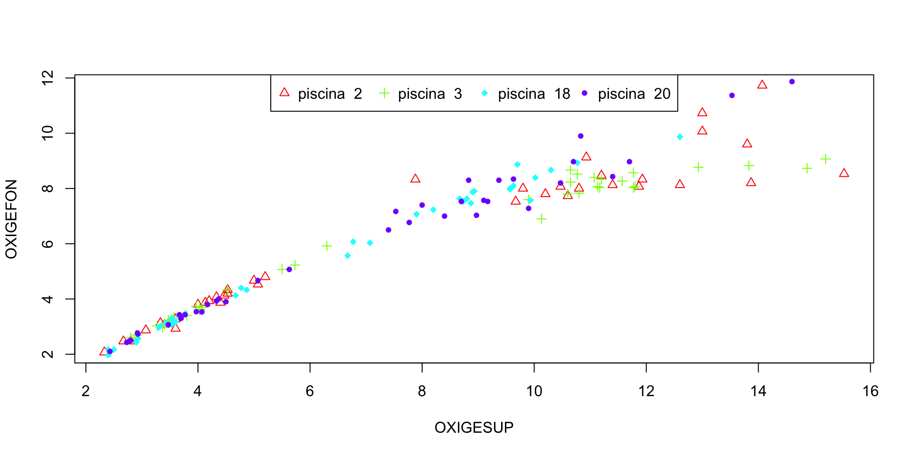
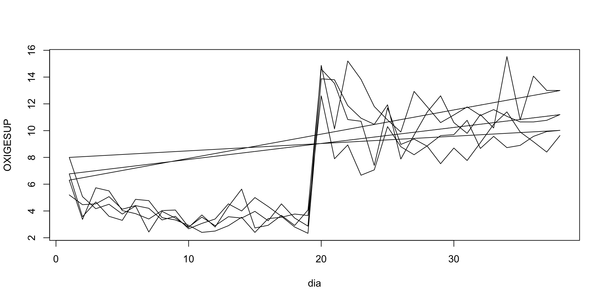
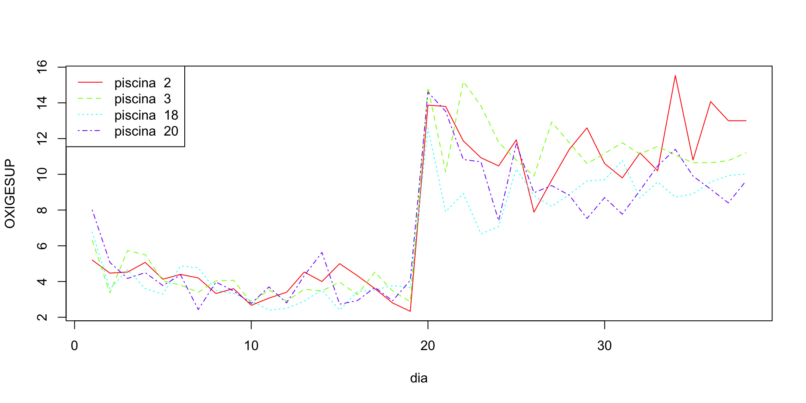
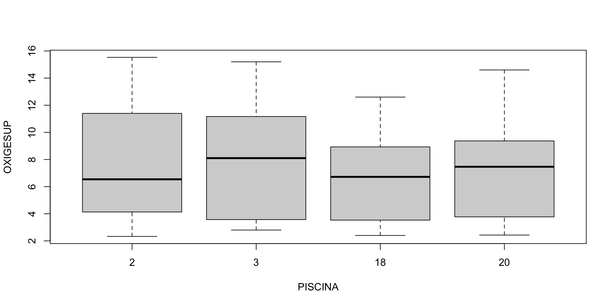
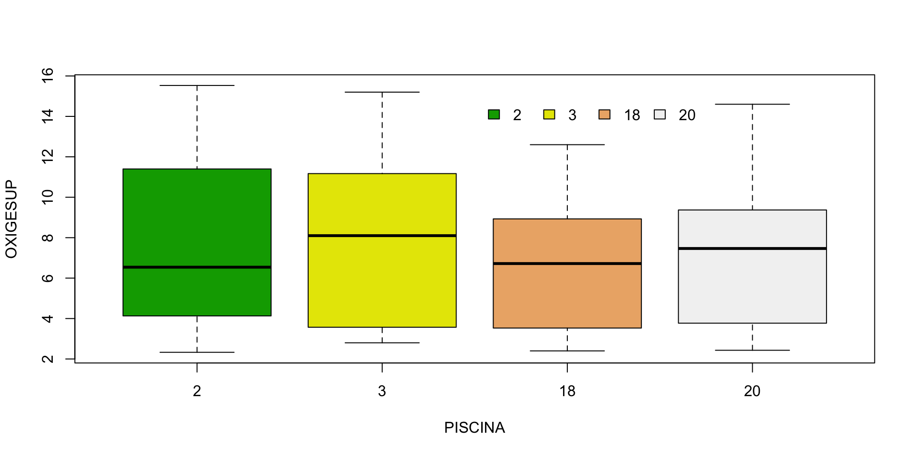

Sistemas gráficos en R
Introducción a ggplot2
![]()
Introducción
Sistemas gráficos de R
A lo largo de su vida, R ha acumulado tres sistemas diferentes para gráficos.
- Sistema
base - Sistema
lattice - Sistema
ggplot2
Sistema base
- También conocido como sistema gráfico tradicional.
- El sistema base es el más antiguo, habiendo existido tanto tiempo como R.
- Es fácil comenzar con los gráficos del sistema base, pero requieren muchos retoques, además son muy difíciles de extender a nuevos tipos de gráficos.
Grid
Para remediar algunas de las limitaciones del sistema base, se desarrolló el sistema gráficos
Grid(cuadrícula) para permitir un trazado más flexible.Este sistema permite dibujar cosas a un nivel muy bajo, especificando dónde dibujar cada punto, línea o rectángulo.
Si bien esto es maravilloso, se requiere mucho tiempo para escribir muchas líneas de código cada vez que queremos hacer un gráfico.
Sistema lattice.
lattice, está construido sobre el sistemagrid, proporcionando funciones de alto nivel para todos los tipos de gráficos comunes.Tiene dos funciones destacadas que no están disponibles en el sistema gráfico tradicional.
- Primero, los resultados de cada gráfico se guardan en una variable, en lugar de simplemente dibujarse en la pantalla.
- Esto significa que puede dibujar algo, editarlo y volver a dibujarlo
Sistema lattice (cont)
- La segunda gran característica es que los gráficos pueden contener varios paneles en una
celosía, o enrejado, por lo que puede dividir sus datos en categorías y comparar las diferencias entre grupos.
El sistema ggplot2
También construido sobre el sistema
grid, es el más moderno de los sistemas gráficos.La “gg” significa gramática de gráficos, que tiene como objetivo dividir los gráficos en partes de componentes.
El resultado es que el código para un
ggplotse parece un poco a la forma inglesa de articular lo que quieres en el gráfico.
¿Debo aprender los tres ?
Lamentablemente, los tres sistemas son en su mayoría incompatibles
La buena noticia es que puedes hacer casi todo lo que quieras en
ggplot2, por lo que aprender los tres sistemas es en su mayoría excesivo.Hay un par de casos de uso poco comunes en los que
ggplot2no es apropiado:
¿Debo aprender los tres?
- Realiza más cálculos que otros sistemas gráficos, por lo que para gráficos rápidos de conjuntos de datos muy grandes, puede ser más conveniente usar otro sistema.
- Además, muchos paquetes de gráficos se basan en uno de los otros dos sistemas, por lo que el uso de esos paquetes requiere un poco de conocimiento del sistema
baseolattice.
Ejemplos comparativos
Lectura de los datos
PISCINA dia OXIGESUP OXIGEFON TEMPSUP TEMPFON SALINSUP SALINFON TRANSP NIVEL
1 2 1 5.20 4.80 29.67 29.00 7.67 7.67 0.38 -73.67
2 2 2 4.47 4.13 29.67 29.00 8.00 8.00 0.33 -11.33
3 2 3 4.53 4.20 30.00 29.00 9.00 9.00 0.34 -4.33
4 2 4 5.07 4.53 29.67 28.67 10.00 10.00 0.25 -6.00
5 2 5 4.13 3.87 29.00 28.00 12.00 12.00 0.23 -9.00
6 2 6 4.40 3.87 28.67 27.67 14.00 14.00 0.28 -9.67Piscina como factor
Gráficos de dispersión
Gráficos de dispersión
Quizás el más común de todos los gráficos es el de dispersión, que se utiliza para explorar las relaciones entre dos variables continuas.
Exploraremos la relación entre el oxigeno disuelto en la superficie
OXIGESUPy el disuelto en el fondoOXIGEFONde las piscinas
Gráficos de dispersión (ST)
Gráficos de dispersión (ST)
Adicionamos la línea de mejor ajuste o de mínimos cuadrados en rojo, calculamos el coeficiente de correlación y lo imprimimos.
Con ggplot2
Con ggplot2 agregar linea
Un color para cada piscina

Un color para cada piscina (código)
Código
piscinas<-levels(acuic$PISCINA)
limx<-range(acuic$OXIGESUP)
limy<-range(acuic$OXIGEFON)
col=rainbow(4)
for(pis in piscinas)
{
datos<-subset(acuic, PISCINA==pis)
if(pis=="2"){
with(datos,plot(OXIGESUP,OXIGEFON,pch=as.numeric(pis),col=col[which(piscinas==pis)] ))
}else{
with(datos,points(OXIGESUP,OXIGEFON,pch=as.numeric(pis),col=col[which(piscinas==pis)]))
}
}
legend("top",legend=paste("piscina ",piscinas),
pch=as.numeric(piscinas),col=col,horiz=TRUE) Con ggplot2
Con ggplot2
Gráficos de línea
Gráficos de línea
Para explorar cómo cambia una variable continua a lo largo del tiempo, un diagrama de líneas a menudo proporciona más información que un diagrama de dispersión, ya que muestra las conexiones entre valores secuenciales.
Para explorar la tendencia del contenido de oxígeno a lo largo del tiempo (los días) realizaremos el gráfico de líneas de la variable OXIGESUP en función de dia
Gráficos de línea (ST)

Gráficos de línea (ST)
Código
piscinas<-levels(acuic$PISCINA)
limy<-range(acuic$OXIGESUP)
color<-rainbow(length(piscinas))
for(pis in 1:length(piscinas))
{
datos<-subset(acuic, PISCINA==piscinas[pis])
if(pis==1){
with(datos,plot(dia,OXIGESUP,type="l",lty=pis,col=color[pis]))
}else{
with(datos,lines(dia,OXIGESUP,type="l",lty=pis,col=color[pis]))
}
}
legend("topleft",legend=paste("piscina ",piscinas),
lty=1:length(piscinas),col=color) 
Con ggplot2
Boxplots
Boxplot (ST)

Boxplot (ST)
Boxplot (ST)
